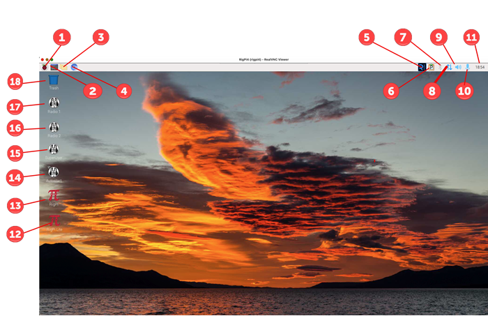

|
<< Click to Display Table of Contents >> Navigation: RigPi Introduction > Raspberry Pi Desktop |
-
The Raspberry Pi Desktop is similar to many graphics desktops. The Raspberry Menu button on the left end of the Task Bar is similar to a Windows File menu. Most buttons and icons have a right-mouse menu for additional options. You can access the Desktop by connecting an HDMI monitor to RSS, or by using VNC Viewer to access it from another computer.
The position of the Task Bar can be set to top, bottom, or a. To change the position (shown at the top, above), right-click over the Task Bar and select Panel Settings. In the Panel Preferences window, select the Edge Position you prefer.
|
Function |
Description |
|---|---|---|
1 |
Raspberry |
Applications Menu |
2 |
Terminal |
Shell access to RSS |
3 |
File Explorer |
Navigate file system |
4 |
Chromium Browser |
Surf |
5 |
VNC |
VNC Server, use VNC Client at remote end to interact with desktop |
6 |
Clipboard |
Raspberry Pi Cut/Paste Clipboard |
7 |
Bluetooth |
Bluetooth Status |
8 |
Wi-Fi/Ethernet |
Internet Connection |
9 |
Speaker |
Audio status and output selections |
10 |
Microphone |
Audio In status and input selections |
11 |
Clock |
Digital clock showing local time |
12 |
RigPi Lite |
Start RigPi Lite |
13 |
RigPi |
Start RigPi in Chromium browser. It is best to connect to RigPi using an external browser, not the Raspberry Pi browser. By using an external browser the limited resources of the Raspberry Pi can be helped by sharing the load with another computer. |
14 |
Mumble Superuser |
Open Mumble as Superuser to make Mumble changes. No audio. |
15 |
Mumble |
Radio 2 Client |
16 |
Mumble |
Radio 1 Client |
17 |
Trash |
Deleted files |
Setting up the Raspberry Pi
When you first start RSS you must make changes to the Raspberry Pi to adjust to your needs and location. These settings are done through the Applications Menu (1)>Preferences>Raspberry Pi Configuration menu item.
The Configuration window has four tabs at the top: System, Interfaces, Performance, and Localisation (sic).
In the Display tab, click the Headless Resolution drop-down list. Select the resolution appropriate for your monitor. Note this affects the screen resolution when the Desktop is viewed through the VNC interface.
In Localisation settings change: Locale, Timezone, Keyboard and Wi-Fi Country.
Change the font/icon size relative to the screen using the Appearance Settings in the Preferences menu. Defaults are provided for large, medium and small screens.
Finally, if you want to enable Wi-Fi, click the up/down arrow button (7) on the right side of the Desktop menu bar. Left-click, then click Turn On Wi-Fi and follow the instructions.